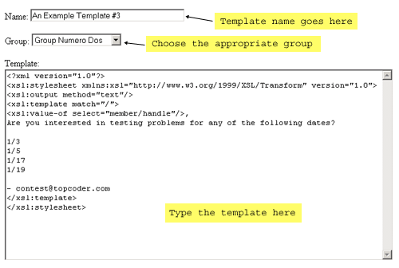
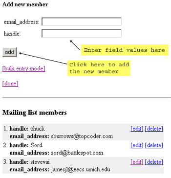
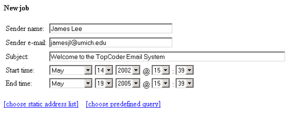

Contents:
This web application follows the Model-View-Controller (MVC) paradigm. Requests from the web interface are sent to a controller servlet, which parses the request parameters to determine the appropriate Javabean task. The task then performs the desired actions and forwards the request to the appropriate JSP, at which point the cycle is repeated.
The main classes that enable this process are:
The Controller class handles all incoming requests. It uses the TASK parameter to determine which Javabean task to invoke. If there is no TASK parameter, it uses the HOME_TASK to send the user to the main menu. The TASK parameter contains the name of the task bean's class - for example, "AddressListTask" tells the controller to use com.topcoder.web.email.bean.AddressListTask to process the request. All task beans subclass com.topcoder.web.email.bean.Task. This abstract base class contains the single method "perform". The "perform" method's job is to perform the appropriate actions and return a TaskRouter object that tells the controller which JSP page it should display next. The controller uses a TaskFactory object to create singleton instances of each desired Task.
The Controller class also provides security. If a client hasn't succesfully logged in, the Controller will redirect the client to the login task without bringing up the requested page.
The controller's "service" method:
/**
* This method handles requests by getting the appropropriate task
* bean, having that bean perform its task, and then routing to the
* resulting page. Tasks are specified by their class name in the
* TASK parameter.
*
* @param HttpServletRequest the servlet request object
* @param HttpServletResponse the servlet response object
*
* @throws ServletException
* @throws IOException
*/
public void service(HttpServletRequest request, HttpServletResponse response)
throws ServletException, IOException
{
try {
String userName = request.getParameter(EmailConstants.USERNAME);
String userPass = request.getParameter(EmailConstants.USERPASS);
String taskName = request.getParameter(EmailConstants.TASK);
trace.debug("Requested task: " + taskName);
try {
boolean [] loggedin = (boolean []) request.getSession().getAttribute("IsUserLoggedIn");
if (loggedin == null
|| !loggedin[0]) {
if (userName == null
|| userPass == null) {
throw new Exception("No login creditials - going to login page");
}
Context context = new InitialContext();
AuthenticationServicesHome serviceHome = (AuthenticationServicesHome) context.lookup(EmailConstants.AUTHENTICATIONSERVICES_EJB);
AuthenticationServices service = serviceHome.create();
Authentication authenticate = service.authenticate(userName, userPass);
trace.debug("Processing login request for user " +
+ authenticate.getUserId().intValue()
+ "(" + userName + ")");
if (authenticate.getUserId().intValue() <= 0) {
throw new Exception("Not a valid user - going to login page");
}
User user = service.loadUser(authenticate.getUserId().intValue());
if (!service.isStaff(user)) {
throw new Exception("Not staff - going to login page");
}
loggedin = new boolean[1];
loggedin[0] = true;
request.getSession().setAttribute("IsUserLoggedIn", loggedin);
}
// if there's no task parameter, go home
if (taskName == null) {
trace.debug("No task parameter - going home");
taskName = EmailConstants.HOME_TASK;
}
} catch (Exception e) {
trace.debug(e.getMessage());
taskName = EmailConstants.LOGIN_TASK;
}
String taskClassName = EmailConstants.TASK_PACKAGE + "." + taskName;
trace.debug("Task bean: " + taskClassName);
try {
Task task = taskFactory.getTask(taskClassName, getClass().getClassLoader());
TaskRouter taskRouter = task.perform(this, request, response);
taskRouter.route(this, request, response);
} catch (Exception e) {
forwardToErrorPage(request, response, e);
}
} catch (Exception e) {
throw new ServletException(e.toString());
}
}
- Tasks
The task beans used by this web application are:
These task beans handle all the interactions between the web front end and the EJB back end. For example, when the user requests the cancellation of a scheduled job from the web interface, the ScheduledJobTask bean retrieves the job id from the request parameters and calls the "cancelEmailJob" method of the EmailJob EJB.
- Forms
The main form beans used by this web application are:
These form beans store properties from JSP forms. For example, the EmailTemplateForm bean stores the group id, template name, and template text entered by the user into the web interface. The form beans are used to retrieve properties from the web interface and vice versa.
- Tags
Custom tags are used in the JSP's to keep most of the Java code outside of the JSP's. The tags are located in the package com.topcoder.web.email.servlet.jsp.tag. An example tag is the TemplateIDNameIteratorTag. This tag subclasses the generic Iterator tag, which iterates through a Collection of Objects. The TemplateIDNameIteratorTag is used in the JSP which displays the list of available e-mail templates:
<email:templateIterator id="idname" group="<%=(String) request.getAttribute(EmailConstants.GROUP)%>">
<tr bgcolor="<%=colors[(row++)%colors.length]%>">
<td width=80%>
<a href="javascript:taskSubmit('<%=EmailConstants.EMAILTEMPLATE_TASK%>', '<%=EmailConstants.TEMPLATE_EDIT%>', '<%=idname.getId()%>');"
onMouseOver="window.status='Edit template'; return true;"
onMouseOut="window.status=''; return true;">
<%=idname.getName()%></a>
</td>
<td>
<a href="javascript:taskSubmit('<%=EmailConstants.EMAILTEMPLATE_TASK%>', '<%=EmailConstants.TEMPLATE_DELETE%>', '<%=idname.getId()%>');"
onMouseOver="window.status='Delete template'; return true;"
onMouseOut="window.status=''; return true;">
[delete]</a>
</td>
</tr>
</email:templateIterator>
In this example, the TemplateIDNameIteratorTag is used to iterate through the templates in a specified template group. Each ID/name pair is used to create an entry in the HTML table. All the formatting is contained in the JSP, and the custom tag is only used to retrieve the information to render.
The "email-war" target in the build.xml file will bundle all of the files associated with this web application into a .WAR file (email.war). The following entry should then be added to the weblogic.properties file:
weblogic.httpd.webApp.email={war path}/email.war
where {war path} is the path containing email.war. The Weblogic server should then be restarted. The email servlet will then be accessible at the following url:
http://{server address}/email/emailServlet
where {server address} is the address of the host server.
The database scripts in /app/scripts/email should be run to ensure that the required stats queries are in the database.
The "web.xml" file contains the configurable properties of this application. All parameters are contained in <init-param> tag blocks of "web.xml". Within each <init-param> section, parameter names are inside the <param-value> tag, and parameter values are inside the <param-value> tag. For example, the following describes a parameter named "home_page" with the value "index.jsp":
<init-param>
<param-name>home_page</param-name>
<param-value>index.jsp</param_value>
</init-param>
Here is a list of parameter names and descriptions:
| Parameter name | Description |
|---|---|
| servlet_alias | Alias to the servlet - for example: /email/emailServlet |
| task_package | Package for task beans - for example: com.topcoder.web.email.bean |
| jsp_root | Root path for JSP's |
| addresslist_num_fields | The number of fields to allow for an address list |
| field_prefix | Prefix for naming fields in a member data form (used internally) |
| member_tag | XML tag for member data information - for example, if the value is "member", all member fields will go between <member> tags |
| email_address_tag | XML tag for email address - for example, if the value is "email-address", the e-mail address for each member will go between <email-address> tags |
| deleted_group_id | When address lists or email templates are deleted, their group id is changed to this value |
| no_list_id | The list id for a scheduled job without a static list |
| no_command_id | The command id for a scheduled job without a predefined query |
| test_list_group_id | Test address lists (uesd for sending test messages) must have this group id |
| recent_job_days | The number of days to look back on the scheduled job list screen |
| default_num_log_entries_per_screen | The default number of log entries to show per screen |
| data_source | The name of the data source for the db |
| recent_jobs_command | Name of the stats query to retrieve recent job id's |
| recent_jobs_result | Name of the result set for the recent jobs query |
| jobs_by_date_command | Name of the stats query to retrieve job id's by date |
| jobs_by_date_result | Name of the result set for the jobs-by-date query |
| jobs_by_sender_command | Name of the stats query to retrieve job id's by sender email |
| jobs_by_sender_result | Name of the result set for the jobs-by-sender query |
| jobs_by_subject_command | Name of the stats query to retrieve job id's by subject |
| jobs_by_subject_result | Name of the result set for the jobs-by-subject query |
| query_description_command | Name of the stats query to retrieve query descriptions |
| query_description_result | Name of the result set for the query-description query |
| query_metadata_command | Name of the stats query to retrieve command query metadata |
| query_metadata_result | Name of the result set for the query-metadata query |
| email_queries_command | Name of the stats query to retrieve available command queries |
| email_queries_result | Name of the result set for the available-command-queries query |
| email_ejb_package | Package of e-mail EJB's |
| authentication_services_ejb_package | Package of authentication service EJB's |
| statistics_ejb_package | Package of statistics EJB |
| email_template_ejb | The email template EJB |
| email_template_group_ejb | The email template group EJB |
| address_list_ejb | The email list EJB |
| address_list_group_ejb | The email list group EJB |
| scheduled_job_ejb | The email job EJB |
| authentication_services_ejb | The authentication service EJB |
| statistics_ejb | The statistics EJB |
| job_status_creating | Job status id for 'creating' |
| job_status_ready | Job status id for 'ready' |
| job_status_active | Job status id for 'active' |
| job_status_complete | Job status id for 'completing' |
| job_status_incomplete | Job status id for 'incomplete' |
| job_status_cancelled | Job status id for 'cancelled' |
| job_type_predetail | Job type id for 'pre detail build' |
| job_type_postdetail | Job type id for 'post detail build' |
| login_task | Task bean that forwards to the login page |
| home_task | Task bean that forwards to the main menu |
| email_template_task | Task bean for template-related tasks |
| address_list_task | Task bean for address list-related tasks |
| scheduled_job_task | Task bean for scheduled job-related tasks |
| login_page | Login JSP |
| home_page | Main menu JSP |
| error_page | Navigation JSP |
| email_template_list_page | JSP that lists email templates |
| email_template_edit_page | JSP for editing an email template |
| email_template_create_page | JSP for creating a new email template |
| address_list_list_page | JSP that lists address lists |
| address_list_edit_page | JSP for editing an address list |
| address_list_create_page | JSP for creating a new address list |
| address_list_edit_member_page | JSP for editing an address list member |
| address_list_add_member_page | JSP for adding a new address list member |
| address_list_bulk_add_page | JSP for bulk-adding address list members |
| scheduled_job_list_page | JSP for listing scheduled jobs |
| scheduled_job_edit_page | JSP for editing a scheduled job |
| scheduled_job_view_page | JSP for viewing a scheduled job |
| scheduled_job_create_page | JSP for creating a new scheduled job |
| scheduled_job_choose_template_add_page | JSP for choosing a template when creating a new job |
| scheduled_job_choose_report_template_page | JSP for choosing a template for the report when creating a new job |
| scheduled_job_choose_command_add_page | JSP for choosing a predefined query when creating a new job |
| scheduled_job_choose_command_inputs_add_page | JSP for choosing query inputs when creating a new job |
| scheduled_job_choose_list_add_page | JSP for choosing an address list when creating a new job |
| scheduled_job_choose_test_list_page | JSP for choosing a test list |
| scheduled_job_ask_send_test_page | JSP for asking if a test message should be sent |
| scheduled_job_choose_template_edit_page | JSP for choosing a template when editing a job |
| scheduled_job_choose_command_edit_page | JSP for choosing a predefined query when editing a job |
| scheduled_job_choose_command_inputs_edit_page | JSP for choosing query inputs when editing a job |
| scheduled_job_choose_list_edit_page | JSP for choosing an address list when editing a job |
| scheduled_job_log_page | JSP for displaying a job's log |
| scheduled_job_log_data_page | JSP for display a job log entry's details |
| scheduled_job_search_page | JSP for searching jobs |
| scheduled_job_search_results_page | JSP for displaying job search results |
External packages used:
The main menu presents the user with three options - Email Templates, Address Lists, and Scheduled Jobs.
The "Email Templates" option takes the user to a screen displaying a list of email templates. The "Group" combobox lists all existing email template groups - selecting one of these groups will refresh the page to display all the templates in the chosen template group. There are three main functions accessible from this page - create, edit, and delete.
Create - To create a new e-mail template, the user should click the "create new message template" link. This link takes the user to a form with three fields - Name, Group, and Template. The "Name" field should contain the desired name of the new template. The "Group" combobox should display the group in which the new template should belong. Finally, the "Template" field should contain the actual e-mail template. When the user clicks the "create" button, the new template will be saved.
The e-mail template should be in the form of an XSLT document. All templates should begin with:
<?xml version="1.0"?> <xsl:stylesheet xmlns:xsl="http://www.w3.org/1999/XSL/Transform" version="1.0"> <xsl:output method="text"/> <xsl:template match="/">
and end with:
</xsl:template> </xsl:stylesheet>
The actual e-mail message should go between those two sections. Any dynamic content should go in an xsl:value-of tag. For example:
<xsl:value-of select="member/handle"/>
will be replaced in the actual e-mails with the value of the handle field for each member of the address list or predefined query. All fields must be prefaced by "member/", because each member of an address list or predefined query is enclosed within a pair of <member> tags.

Report templates are similar to e-mail templates, but the report template will be transformed twice, so additional headers are necessary. Also, the first transformation will be using the report XML data, so a different set of values are available. The second transformation will be using the address list that the report is being sent to and works exactly like a broadcast (because it is a broadcast).
The report data fields are:
| id | The job id of the email broadcast job for which the report is generated. |
| status | A text description of the final status of the email broadcast job. |
| date | The start date for the email broadcast job (may not match the actual time the job was started if resources were not available). |
| template | The text name of the template that was used for the email broadcast job. |
| template_group | The text name of the group the template was assigned to. |
| sender_email | The email address that the broadcast was sent by. |
| sender_name | The name that the broadcast was sent by. |
| subject | The subject line of the email broadcast. |
| count_sent | The number of emails that were successfully sent. |
| count_failed | The number of emails that did not get sent. |
| count_other | The number of emails that have a status other than sent or failed. Primarily intended to cover the case of new result statuses being added in the future. |
| list_sent | The email addresses that were successfully sent the message, 1 per line. |
| list_failed | The email addresses that did not get sent the message and the reason that they did not get the sent the message. 1 address plus reason per line. |
| list_other | The email addresses that have an unexpected status and the reason for the status, if any. 1 address plus reason per line. |
The following example is a simple report template that includes the subject line, a count of the messages that failed to send, and the list of addresses that failed to send, if any:
<?xml version="1.0"?> <xsl:stylesheet xmlns:xsl="http://www.w3.org/1999/XSL/Transform" version="1.0"> <xsl:output method="text" media-type="text/rtf"/> <xsl:template match="/"><![CDATA[<?xml version="1.0"?> <xsl:stylesheet xmlns:xsl="http://www.w3.org/1999/XSL/Transform" version="1.0"> <xsl:output method="text" media-type="text/rtf"/> <xsl:template match="/">]]> This is a report for broadcast about: <xsl:value-of select="/report/subject"/> The broadcast is <xsl:value-of select="/report/status"/>. There were <xsl:value-of select="/report/count_failed"/> failed messages. <xsl:value-of select="/report/list_failed"/> <![CDATA[</xsl:template> </xsl:stylesheet>]]> </xsl:template> </xsl:stylesheet>
Edit - To edit an e-mail template, the user should click the name of the desired template. The user will be presented with the same form as above. Clicking the "save" button will save the edited template.
Delete - To delete an e-mail template, the user should click the "delete" link next to the desired template. The template will not actually be deleted - rather, it will be put into the predefined "Deleted" template group.
The "Address Lists" option takes the user to a screen very similar to the templates screen. The main page displays a list of address lists. The "Group" combobox contains all existing address list groups - selecting one of these groups will refresh the page to display all the address lists in the chosen address list group. Like the main template screen, there are three main functions accessible from this screen - create, edit, and delete.
Create - To create a new address list, the user should click the "create new mailing list" link. This link takes the user to a form with a "Name" field, a "Group" combobox, and several "Member data" fields. The "Name" field should contain the desired name of the new address list. The "Group" combobox should display the group in which the new template should belong. The "Member data" fields should contain the various fields that members of the new address list should contain. "email_address" is a mandatory field. Fields that are more than a single level deep should be delimited by the '/' character. For example, if the following fields are specified:
email_address
name/first
name/last
The members of the address list will look like:
<member> <email_address>an email address</email_address> <name> <first>first name</first> <last>last name</last> </name> </member>
Clicking the "create" button will bring up the member addition screen. Members can be added one at a time, or in bulk. To add members one at a time, fill in the specified fields, and click "add" for each member. To switch to bulk entry mode, the user should click the "bulk entry mode" link. This screen shows one large text area where the user can enter multiple address list members in a single shot. The instructions on the screen will explain the order in which the user should input the fields - each line will contain a single member.

To edit and delete members, the user can click the "edit" and "delete" links that show up next to each member's data. The process for editing a member is identical to the process for adding a member.
Edit - To edit an address list, the user should click the name of the desired address list. The editing process is identical to the creating process.
Delete - To delete an address list, the user should click the "delete" link next to the desired address list. The address list will not actually be deleted - rather, it will be put into the predefined "Deleted" template group.
The "Scheduled Jobs" option takes the user to a screen that displays a list of recent scheduled jobs. The user can view, edit (where applicable), view log entries for, cancel (where applicable), and resume (where applicable) jobs in this list. The user can also schedule new jobs and search past jobs through links from this screen.
Schedule - To schedule a new job, the user should click the "schedule new job" link. This will bring up a form where the user can specify several required pieces of information: the sender name, sender e-mail address, subject, start time, and end time. The start time specifies the earliest time at which the job should begin. The end time specifies the time after which the job should not continue.

After filling in the required fields, the user can also choose which administrative emails they wish to generate.
The reminder email sends a copy of the email to the admin list (selected in a later step) about 15 minutes before the full broadcast is scheduled to being.
The test email sends a copy of the email to the admin list immediately upon being scheduled.
The report email sends a report to the admin list. The report may include information such as how many emails were sent and how many failed, and may also include the list of failed email addresses. The format of the report is determined by the report template choosen (selected in a later step) and the report will be sent shortly after the main broadcast finishes.
Finally, the user can choose either a static address list or a predefined query by clicking one of the two links at the bottom of the page. The address list link will bring up a list of available address lists. The user should choose one by clicking on the name of the desired list. The predefined query link will bring up a list of available queries. Clicking on one of the queries will bring up a screen where the user can input any values required by the query. If the query does not take any values, this screen is skipped.
After choosing either a predefined query or static address list, the user must choose an email template. The screen will display a list of available templates. The user can choose one by clicking on the name of the desired template.
If no administraive emails were requested, the job is now scheduled and the schedule screen is displayed. If administrative emails were requested, the admin list must be selected. After the admin list is selected, if a report is to be sent, the report template must also be picked. Be sure to pick a valid report template (one that has the extra set of headers) or the report task will fail to send any emails.
Hint: After the report is sent, the report remains available in the [SentReports] template group.
View/Edit - Jobs can only be edited before the back end builds the job details in the database. Jobs eligible for editing will show up with an "edit" link. Other jobs will show up with a "view" link in its place. The "view" link shows a read-only screen that displays the details of the job. The "edit" link shows an editable form similar to the first screen shown when creating a new job. There are additional links to change the template, address list, or predefined query.
Log - Job log entries can be viewed by clicking a job's "log" link. Entries in the status column of the log screen can be clicked to view details of each log entry.
Cancel/Resume - Jobs in progress can be cancelled by clicking their "cancel" links. Cancelled jobs can be resumed with the "resume" link.
Search - Clicking the "search past jobs" link will bring up a search page. The user can use this page to search past jobs by date, e-mail address, and subject.